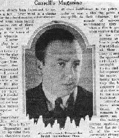

|

A la mort de son père, Hitchcock quitte le collège pour entrer dans une école
technique (School of Engineering and Navigation).
Contrairement à
beaucoup de réalisateurs dont la composante littéraire est très
affirmée, Hitchcock, restera toujours un amoureux de la technique et du
perfectionnisme de scènes très complexes. Pour ne citer que les plus célèbres,
la scène de la douche de
Psychose ou bien celle des ciseaux dans
Le crime était presque parfait.
Cette particularité du cinéaste lui vaudra certainement de n'avoir
jamais été vraiment
reconnu à sa juste valeur d'artiste et entre autres de n'avoir jamais eu
d'oscar à Hollywood...
Pour gagner sa vie, le jeune Alfred (il a alors 19 ans) entre à la compagnie
télégraphique Henley ; en même temps, il suit des cours de dessin à la section
des Beaux-Arts de l'Université de Londres.
Grâce à ses dons pour le dessin
et après avoir été spécialisé dans le calcul des câbles électriques
sous-marins, il est muté au service publicité de chez Henley.
Quelques temps plus tard, Hitchcock collabore avec la société américaine
Famous Players-Lasky (filiale de Paramount) qui ouvre une
succursale à Londres.
Son travail consistait à illustrer les cartons affichés entre les séquences
des films muets de l'époque. Les dons évidents du jeune Alfred pour le dessin
font qu'il est définitivement embauché comme chef de la section des
titres.
Il entreprend à cette époque (1922) la production et la réalisation d'un film
qui ne sera jamais terminé (il ne fera que deux bobines)
Number thirteen.
Hitchcock devient bientôt assistant metteur en scène dans la compagnie que
Michael Balcon avait fondé et il propose de racheter les droits d'une pièce
de théâtre intitulée Woman to woman dont il
se propose de réaliser également le script. C'est lors de ce tournage qu'il
rencontrera Alma Reville qui deviendra sa femme.
Hitchcock sera ensuite co-scénariste, décorateur, assistant réalisateur et
même monteur sur The white shadow en 1923,
Passionate adventure en 1924, Blackguard en 1925 et
The prude's fall également en 1925.
Ce n'est qu'en 1926 qu'il réalisera son premier film en tant que
réalisateur. Cette année 1926 sera particulièrement riche pour
Alfred Hitchcock.
Sur la proposition de Michael Balcon, il réalise son premier
film, The pleasure
garden.
Il réalise ensuite The moutain eagle
qu'Alfred Hitchcock qualifiera lui-même de mauvais film et qui est
considéré comme perdu (il n'en reste que quelques photos).
Cependant, le premier véritable Hitchcock picture est certainement
The lodger également réalisé en 1926 qui contient
tous les ingrédients des futurs succès : une fille blonde, un étrangleur,
un locataire injustement soupçonné et un juste dénouement...
Il termine l'année par la réalisation de
Downhill qui n'eut pas un grand succès.
En 1927 il réalise Easy virtue et
The ring qui est un des rares films d'Hitchcock
sans intrigue criminelle.
En 1928, il réalise The farmer's wife
puis Champagne dont il dira lui-même
c'est probablement ce qu'il y a de plus bas dans ma production.
En 1929, il réalise son dernier film muet
The manxman puis Blackmail (Chantage) qui
bénificiera de la nouvelle technique du cinéma parlant (il en existe
une version muette et une parlante).
Dès lors commence pour Hitchcock la fabuleuse carrière que nous lui connaissons
avec la période anglaise (jusqu'en 1939) et la période
américaine à partir de 1940 avec le film
Rebecca.
|